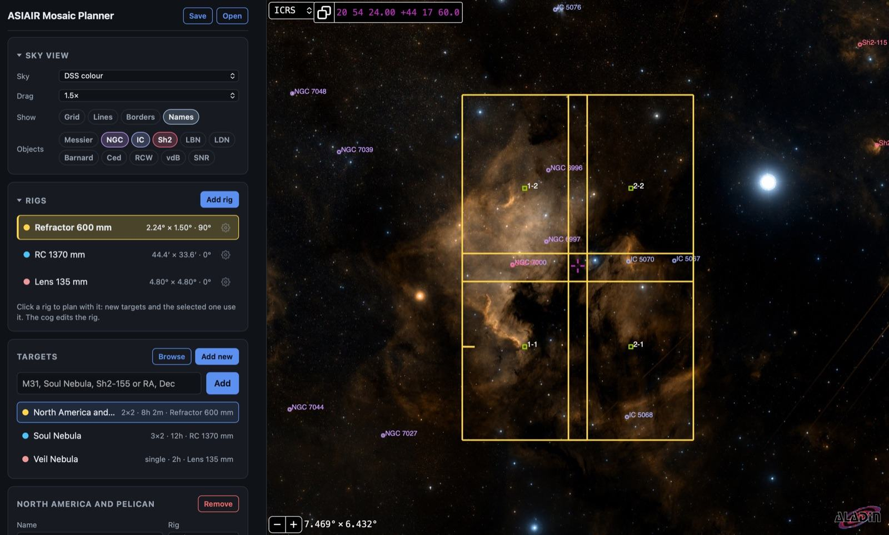
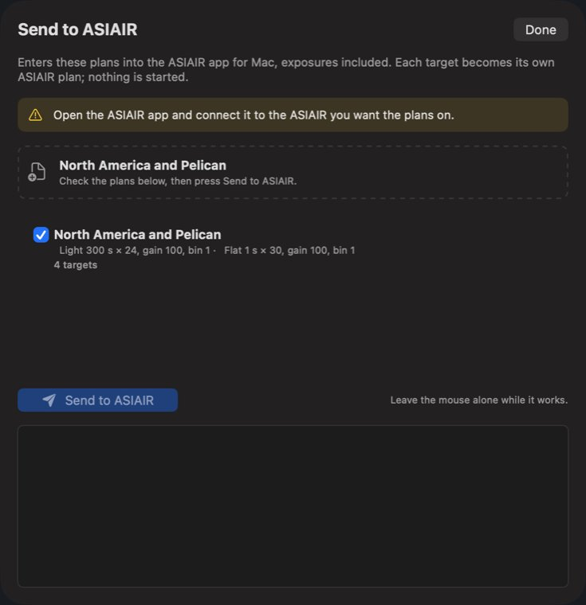
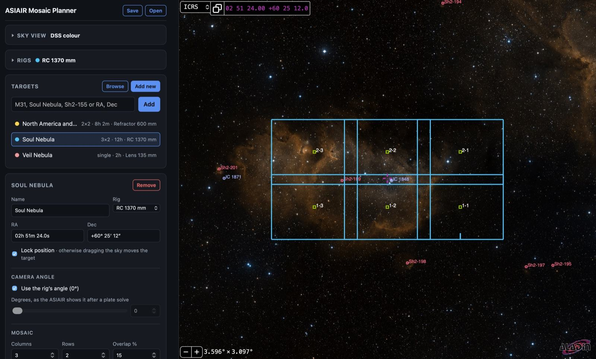
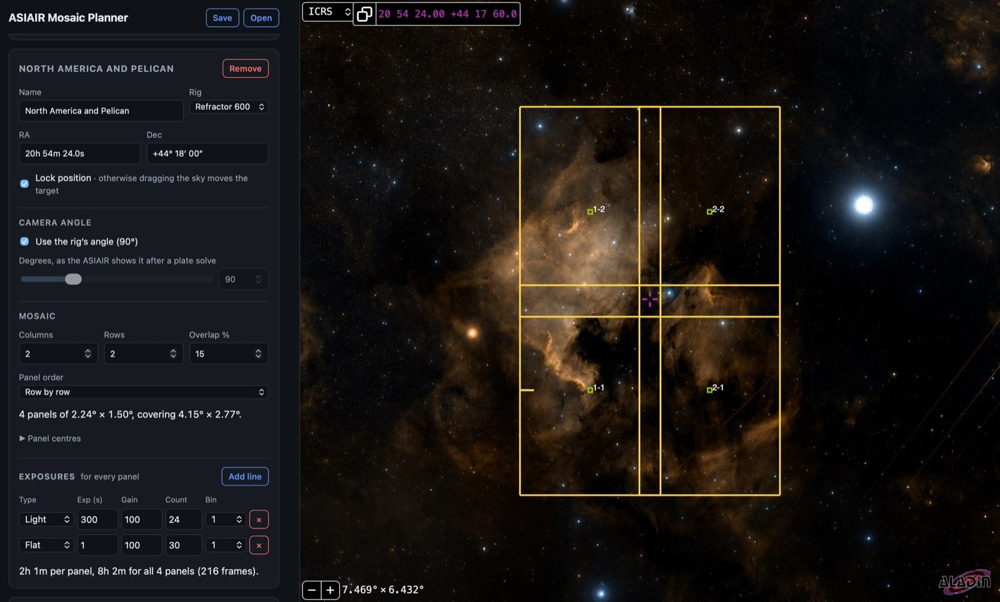

Plan your mosaics on the real sky.
Send them to the ASIAIR in one go.
Frame a target or a mosaic on real sky images, for every rig side by side, during the day. Add the exposures, then send the whole plan to the ASIAIR app instead of typing it in panel by panel.
Free. Works in any modern browser, iPad included. It never connects to an ASIAIR itself: plans go in through ZWO's own app.


A 2×2 mosaic of the North America and Pelican nebulae for a 600 mm refractor, and the Mac app's Send panel ready to enter it into the ASIAIR app, exposures included.
Why it's useful
Plan on the real sky
Frames are drawn on sky survey images (DSS, SDSS, Pan-STARRS and more), with Messier, NGC, IC, Sharpless, LBN, LDN, Barnard and other catalogues labelled. Plan in daylight, not at the scope.
Every rig side by side
Each rig gets its own colour, and each target remembers its rig. See how a target fits a short refractor and a long RC before you choose.
Mosaics worked out on the sky
Columns, rows, overlap (15% by default, as the ASIAIR app suggests) and angle. Panel centres and angles are calculated on the sphere, and numbered in the order they'll be shot.
Exposures included
Give each target its exposure lines (light, flat, gain, count, binning) and see the time per panel and for the whole mosaic.
No typing panels into the app
The Mac app enters every panel into the ASIAIR app for Mac, exposures and all. Or copy the panels and paste them with Import on the ASIAIR app's Plan screen.
Finds what imagers call things
Soul Nebula, Pacman, Elephant's Trunk: about 110 common names, catalogue numbers however they're written, and anything else from SIMBAD.
A closer look


A second rig in its own colour: a 1370 mm RC needs six panels for the Soul Nebula.


The target card: position, camera angle (as the ASIAIR shows it after a plate solve), mosaic and exposures.
Get it
The same planner two ways. Your rigs and targets stay in your browser or in the app; Save and Open move them between the two.
In your browser
Any modern browser: Mac, Windows, Linux, iPad- Open the planner. Nothing to install.
- To get plans into the ASIAIR: copy the panels and paste them into the ASIAIR app, or save a send file for the Plan Sender (Mac).
Mac app
Apple silicon (M1 and later), macOS 13 or later- Download, unzip, and drag it into Applications.
- First time: right-click it, choose Open, then Open again.
- To send plans, allow it in System Settings → Privacy & Security → Accessibility. The Send panel has a button that takes you there.
Getting started
Add your rigs
Focal length and camera (common ZWO cameras are listed), or type the field of view from a plate solve, which is more exact.
Find a target
Search by name or coordinates. Or press Browse, drag around the sky, and Add new where you like.
Frame it
Set columns and rows, then drag the sky underneath the frame. Tick Lock position when you're happy.
Send it
Add the exposure lines, then Send to ASIAIR in the Mac app with the ASIAIR app open and connected. Each target becomes its own ASIAIR plan; nothing is started.
Unofficial: the ASIAIR only takes plans from ZWO's app, so the planner works through it. More detail, including what the ASIAIR app does with pasted panels, is in the guide on GitHub.